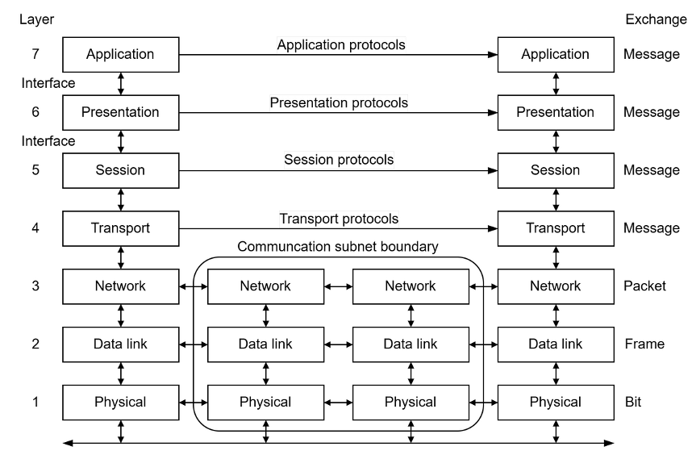
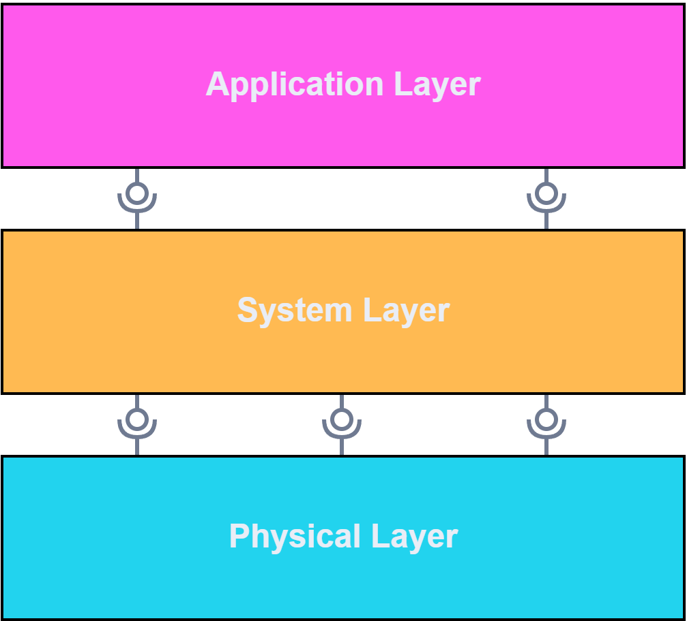

FullStaQD Reference Architecture
The FullStaQD Reference Architecture provides architectural guidance to address requirements commonly found in quantum software systems. Its key goal is to foster interoperability and modularity in quantum software. As a reference architecture, this project remains on a fairly high level, describing abstract responsibilities in typical components and interfaces rather than enforcing the use of specific packages or protocols. Reference Implementations for these abstract parts are also developed within the FullStaQD project and will be made available at a later date.
This introductory page provides a brief overview of key elements in the reference architecture, as well as the methodology which was used to develop the reference architecture. More detailed guidance is available in the respective sections of the reference architecture documentation which can be accessed on the left. This documentation roughly follows the arc42 architecture documentation template (v9.0) for section organisation.
Help us improve the reference architecture!
The FullStaQD Reference Architecture is designed in the open on GitHub. We warmly invite the community to give feedback, to discuss improvements, and to collaborate on making it useful for practical use.
Check out our contribution guide on GitHub!
What is a reference architecture?
A reference architecture describes the common architecture of a set of software systems. Therefore, it is essential to first understand what software architecture is and how it can be useful.
Software Architecture: In software engineering, the architecture of a software system describes its high-level design. Software architectures are ideally designed after researching the requirements of the system, and before designing the fine-grained structure of the system. Thinking about the high-level structure of a system early on in its design process allows the architect to address architecturally significant requirements. Such requirements are usually hard or expensive to retrofit once the system has been implemented already. A typical example for architecturally significant requirements is a performance requirement since tight performance bounds can often only be achieved with the right technologies (e.g. programming languages or databases), and with tight couplings between components that require low-latency or high-bandwidth communication.
Reference Architecture: A reference architecture adds another level of abstraction compared to concrete software architectures. It describes the "essence of the architectures of a set of software systems of a given domain" and "its purpose is to be a guidance for the development, standardization, and evolution of systems."1 Reference architectures can be used to describe families or product lines of software systems, and here we use it to describe the family of quantum software systems.
Example: The well-known OSI telecommunications model is a well-known example which can be considered a reference architecture. It defines seven abstractions layers which characterise a separation of concerns in telecommunications without specifying concrete implementations for these layers, or concrete protocols between them. The OSI model can be instantiated to describe WWW systems, for example using TCP on the transport layer, SSL on the presentation layer, and HTTP on the application layer. The reference architecture is abstract enough to be stable w.r.t. changes of the concrete protocols (e.g. using a different encryption protocol on the presentation layer) yet it is concrete enough to provide a common structure to telecommunications systems.

Overview
The FullStaQD Reference Architecture uses a three-layered architecture to structure quantum software systems into different levels of abstraction:
- Quantum programs are first specified in the Application Layer which is largely device-independent and offers high-level programming tooling.
- The System Layer's purpose is to translate these programs into efficient low-level representations, taking into account execution environment properties both from quantum devices and HPC resources.
- Quantum programs are executed in the Physical Layer which contains quantum device firmware or simulators, and adapters exposing the features of those devices under a unified interface.
A detailed breakdown of the components of the layers can be found in the building block view.
Not all responsibilities in the quantum software stack can generally be associated with a single layer, some need to be implemented across layers, like Fault Tolerance, Monitoring, or Development Tooling. The cross-cutting concepts section elaborates on how to realise these varous cross-cutting concepts.

Quality Requirements Overview
The architectural decisions taken in the FullStaQD Reference Architecture are driven by the quality requirements typically found in quantum software systems. The following list is a summary of the most significant quality requirements; the full list can be found in the quality requirements section.
| Quality Requirement | Description |
|---|---|
| Extensibility | Quantum software systems can be extended with new use cases, SDKs, compiler passes, fault tolerance measures, and quantum devices. |
| Integrability | Quantum software systems can be integrated into existing IT infrastructure, and High-Performance-Computing (HPC) systems in particular. |
| Modularity | Changes to one component should not affect other components. |
| Fault Tolerance | The quantum software system can produce correct results in the presence of noise. |
| Maintainability | The reference architecture can be modified, corrected, adapted or improved due to changes in the environment or requirements with ease. |
Stakeholders
Quantum software systems are developed and used by stakeholders with different motives, interests and constraints. These forces influence the design of software systems, and software architecture in particular. For example, stakeholders can demand different levels of abstractions: Business users of quantum software benefit from a high level of abstraction to inform their decisions whereas quantum firmware developers need access to all technical details.
Schmidbauer et al.3 present the following persona hypothesis, that is a characterisation of the typical stakeholders in quantum software:
| Category | Stakeholders |
|---|---|
| Application-oriented | business user, early adopter, government contractor |
| Application- and hardware-oriented | simulation-focused engineer, researcher |
| Hardware-oriented | platform builder, quantum algorithm designer, HPC engineer, embedded quantum developer |
In the FullStaQD Reference Architecture, we keep stakeholders in mind throughout the architecture design. Most prominently, the reference architecture uses a three-layered architecture to offer different levels of abstraction to different stakeholders.
More about stakeholders
More info on documenting stakeholders can be found in the arc42 docs. For a recent study on stakeholders in quantum software, check out the "Know You Qubits, Know Your Users: Personas for Quantum Software" paper by Schmidbauer et al..
Methodology
The design of the FullStaQD Reference Architecture follows best practices from software engineering. As such, it is driven by architecturally significant requirements that are typically found in quantum software. The domain of quantum software is highly complex as (1) it involves stakeholders and use cases with various different perspectives, (2) it still lacks common abstractions and a common language, and (3) the field is still evolving rapidly.
To find the architecturally significant requirements despite these challenges, several state-of-the-art methods from classical software engineering were employed:
| Method | Description | Reason |
|---|---|---|
| Scenario-Based Analysis | Using predefined scenarios of use cases on the reference architecture | To assess how well the reference architecture covers the predefined scenarios and to identify the common requirements shared by the components on which those scenarios depend |
| Requirement Survey | Sending surveys to stakeholders asking for requirements and needs for their components | Obtaining high-level input on the requirements that the reference architecture must fulfill |
| Interview Survey | In-depth interviews with experts of various architectural concerns (e.g. HPC, hardware, compilation) about the architecturally significant requirements in their area of expertise | Evaluating the reference architecture and gathering detailed input from various areas |
| Workshops | On-site workshops with relevant partners from the FullStaQD consortium | Evaluating and improving the reference architecture |
| Community Engagement | Presenting the FullStaQD Reference Architecture at conferences and designing it openly on GitHub | Gathering feedback from a broad audience and promoting interoperability |
Publication of study results
The investigations mentioned above are still ongoing efforts. The FullStaQD Reference Architecture team intends to publish key results from these studies once the they are complete.
-
Nakagawa, E. Y., Oquendo, F. & Becker, M. "RAModel: A Reference Model for Reference Architectures". 2012 Joint Working IEEE/IFIP Conference on Software Architecture and European Conference on Software Architecture (2012). ↩
-
Fortier, P. J. & Michel, H. E. "15 - Analysis of Computer Networks Components", in Computer Systems Performance Evaluation and Prediction (2003). ↩
-
Schmidbauer, L. "Know You Qubits, Know Your Users: Personas for Quantum Software". Preprint on arXiv (2026). ↩